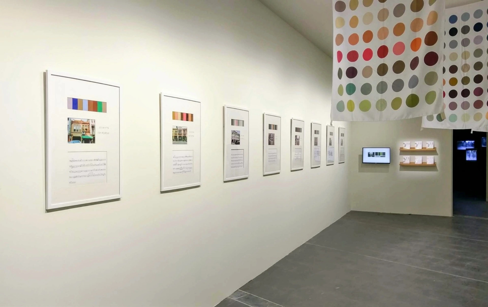
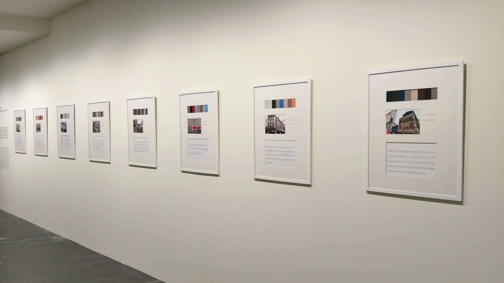
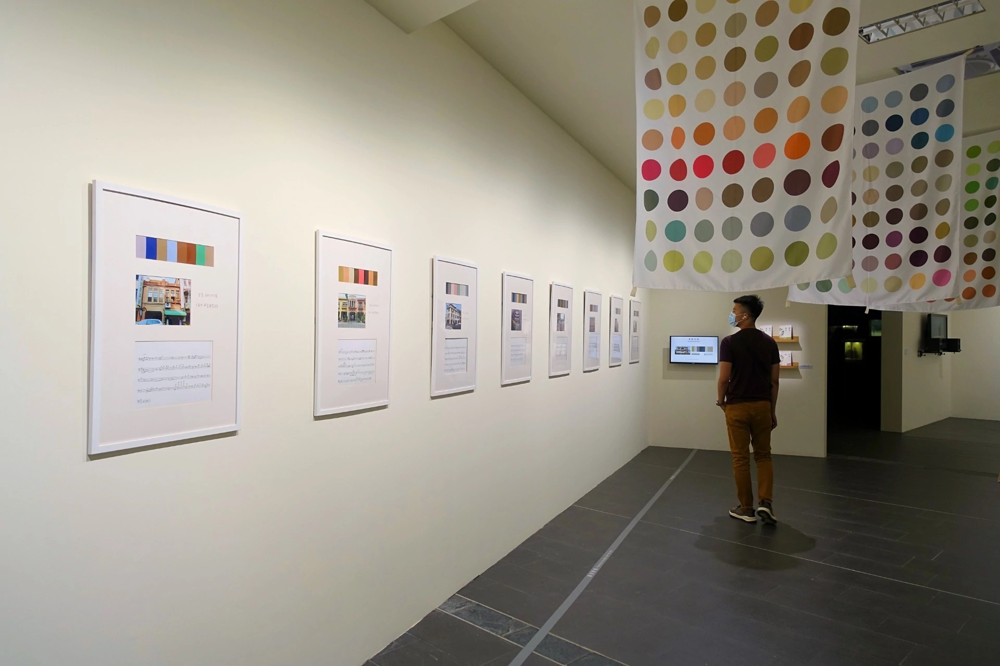
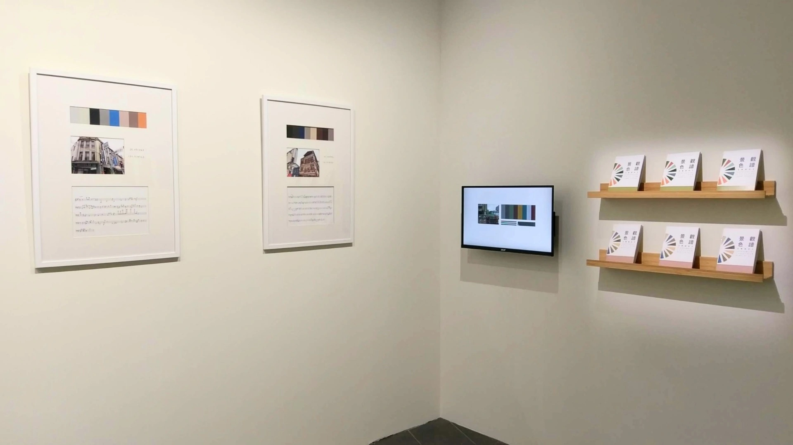
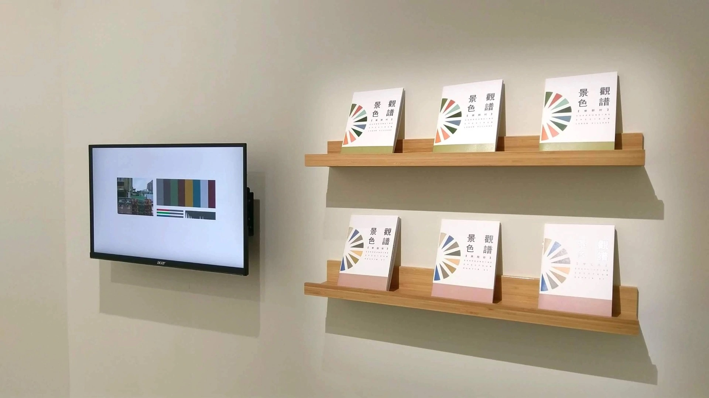
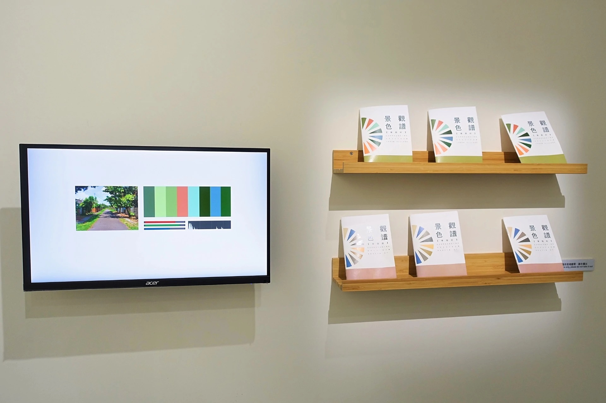

×
Field Survey & Digital Output • 2019






Surrounding Spectrum is a long-term project that reads street and environmental landscapes from visual and auditory perspectives, constructing a renewed understanding of environmental aesthetics through systematic observation. By translating landscape imagery into color tickets and music through program analysis, the artist explores the sensory structure shared by environments and residents. The images of village landscapes are loaded into a custom program, which captures color information and uses color parameters to build digital audio, automatically generating AI music. In this way, every image and every landscape carries an inner melody that can be heard.
Since 2018, the artist has developed and deepened this project through fieldwork in Lequn Village, Huayin Street, and Xiluo Township. These three sites represent a military village that could not be preserved, a declining old commercial district, and an increasingly aging small town. The work seeks a new perceptual angle from which to read the historical contexts of these places and translate them into vivid music, so that gradually buried memories can be brought forward again.
Through literature review and interviews, the artist documents local life experiences in text, while also photographing the streetscape. The images are analyzed by a self-developed program that extracts color parameters and converts them into audio based on color theory and acoustics. Each image therefore has its own inner melody, and every streetscape becomes a song. The written fragments of daily life function like lyrics, aiming to present a layered portrait of environmental perception interwoven with lived experience.